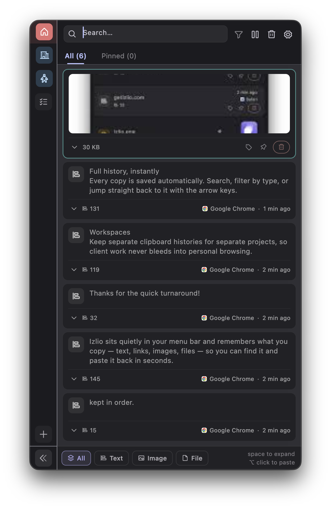
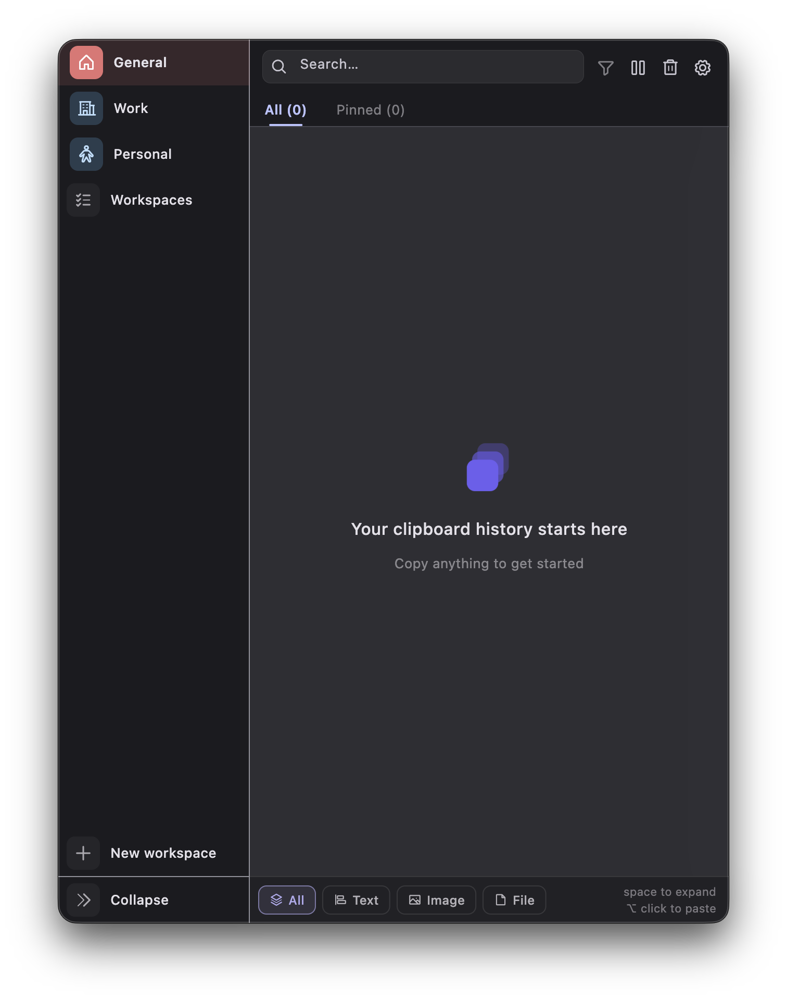
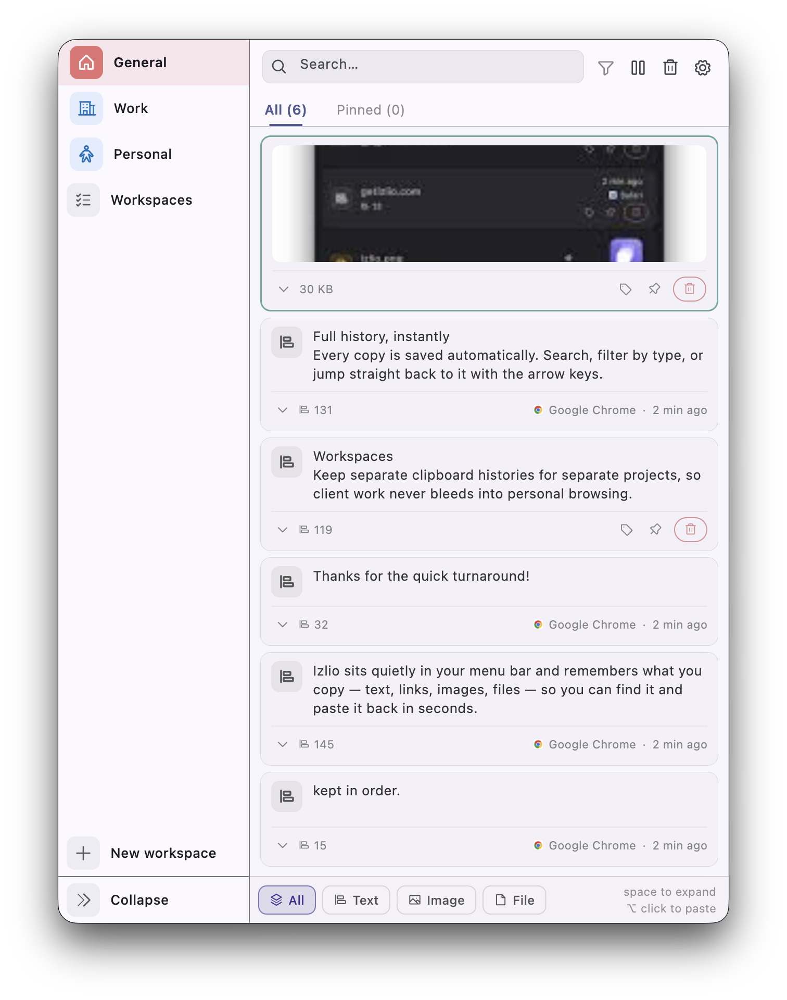

Izlio sits quietly in your menu bar and remembers what you copy — text, links, images, files — so you can find it and paste it back in seconds.
No accounts, no clutter, no waiting for a cloud sync to load your own history.
Every copy is saved automatically. Search, filter by type, or jump straight back to it with the arrow keys.
Keep separate clipboard histories for separate projects, so client work never bleeds into personal browsing.
Pin the things you reuse constantly. Tag the rest so it's still findable weeks later.
Copy a screenshot or a file in Finder — it shows up in your history just like any snippet of text.
Your history lives on your Mac. Nothing is uploaded, and sensitive-looking entries are blurred automatically.
One click from the menu bar stops capture entirely — for the moment you're copying something you'd rather not keep.


